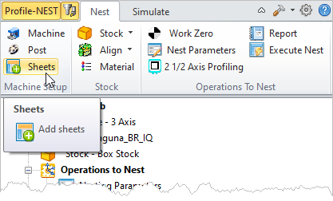
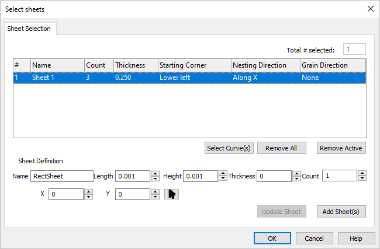
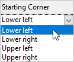
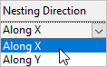
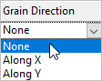
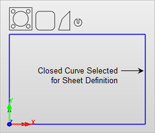

This dialog is used to define the sheets in your nest. It is divided into two parts. The Sheets List at the top and the Sheet Definition at the bottom. Defining a sheet and then selecting the Add Sheet(s) button will create the sheet and add it to the list. Once listed, you can further control parameters for the sheet defined by each column in the list. Refer to each option listed below.
 |
Use this dialog to define the sheets you want to use in this nesting job. You can define a sheet using the Select Curve(s) button or by specifying the sheet dimensions and selecting the Add Sheet(s) button. You can also select a defined sheet from the list and edit its parameters such as Name, Length, Width, etc. using the Update Sheet button.  Add Sheet to Nest |
The sheet definition record includes the sheet #, Name, Count, Thickness, Starting Corner, Nesting Direction and Grain Direction. You can edit these parameters after the sheet is defined by selecting the Update Sheet button. # Sheets are numerically identified at the time of creation. Name This is the name of the sheet provided when it was created. Count This is the total quantity for this sheet. Thickness This is the designated thickness for the sheet. Starting Corner This is the starting corner for the toolpath operations nested on this sheet.  Starting Corner
Nesting Direction This is the direction that toolpath operations will be nested on this sheet. For example, beginning at the Lower Left, operations would nested from left to right (Along X).  Nesting Direction Grain Direction This is the grain direction for the sheet. It can be used to control how toolpath operations are oriented on the sheet. For example, if you select Along X here and then select Along Y for Grain Direction on the Nest Parameters tab of the toolpath operation dialog, then that toolpath would be rotated 90 degrees on this sheet.  Grain Direction Select Curve(s) Pick this button to select geometry to be used as Sheets. You may window-select all closed curves and press <Enter> or <Right-Click> to add them to the selection list. Selecting open profiles is not supported. Sheets are Only periphery shapes and cannot contain holes or cutouts. test  Remove All Pick this button to remove ALL items from the list. Remove Active Select the Remove Active button to remove the currently selected item from the list. |
Use these controls to define the parameters for a new sheet. Once the fields are defined, pick the Add Sheet(s) button to add the sheet to the list above. Name This will be the Name of the defined sheet. Length This will be the Length of the defined sheet measured in the default drawing units. Height This will be the Height of the defined sheet measured in the default drawing units. Thickness This will be the Thickness of the defined sheet measured in the default drawing units. Count This will be the Count total for the defined sheet. X / Y / Pick
Update Sheet Select this button to update the selected sheet with changes you have made to its parameters.
Add Sheet(s) After entering the Sheet Definition parameters, select the Add Sheet(s) is button to add the sheet to the sheets list. |